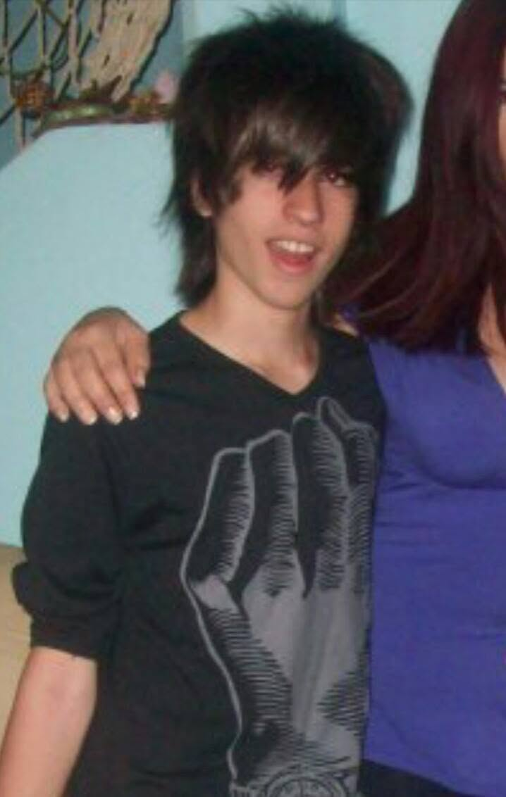

Diseño, creatividad y entusiasmo.
Soy Lucas Blas, diseñador gráfico con experiencia trabajando en proyectos de publicidad digital, branding, redes sociales, diseño impreso e ilustración para clientes y marcas tanto locales como internacionales. A lo largo de mi carrera trabajé en contextos muy distintos: desde producción gráfica y proyectos freelance hasta campañas digitales de alto volumen orientadas a performance. Esa variedad me llevó a desarrollar una forma de trabajar que combina criterio visual, adaptabilidad y una mirada enfocada tanto en los detalles como en el objetivo detrás de cada pieza. Me interesa especialmente explorar nuevas formas de crear y optimizar procesos. En los últimos años incorporé herramientas de IA generativa a mi flujo de trabajo para experimentar, desarrollar conceptos y ampliar las posibilidades del diseño, sin perder el criterio y la dirección creativa detrás de cada decisión. Actualmente continúo ampliando mis conocimientos en diseño, tecnología y comunicación visual, buscando proyectos que me permitan enfrentar nuevos desafíos y seguir evolucionando profesionalmente.
Herramientas & conocimientos
- Adobe Photoshop
- Adobe Illustrator
- Adobe Premiere Pro
- Figma
- Retoque y composición fotográfica
- Edición de video & motion graphics
- Diseño web & email
- Fundamentos de HTML & CSS
- IA generativa & LLMs — ChatGPT, Claude, Gemini
- Generación visual con IA — Nano Banana, Midjourney, ChatGPT, Grok
Forma de trabajar
- Dirección y criterio creativo
- Gestión de proyectos
- Comunicación efectiva
- Resolución creativa de problemas
- Liderazgo y trabajo en equipo
- Adaptabilidad
- Organización y atención al detalle
- Aprendizaje continuo
Si llegaste hasta acá, probablemente tengas algo entre manos. Contame qué es, en tus palabras, sin ordenarlo demasiado. De lo desordenado suelen salir los mejores puntos de partida.